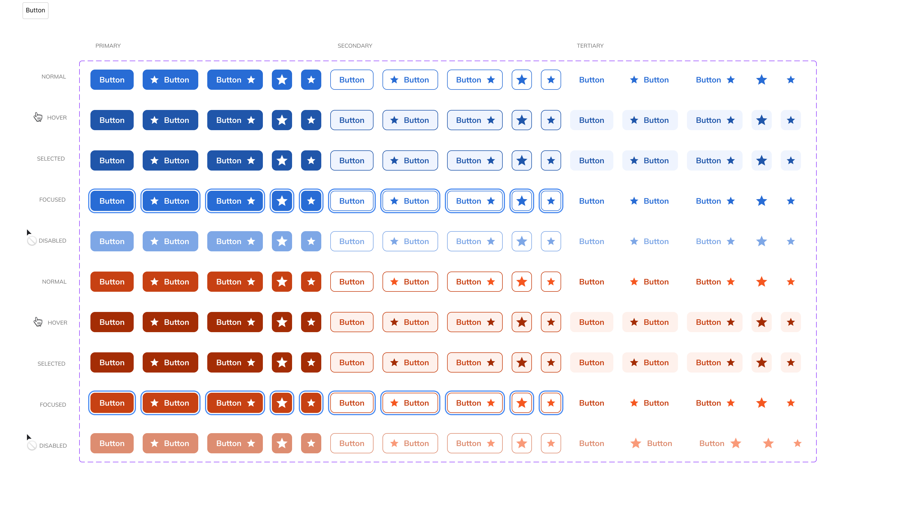
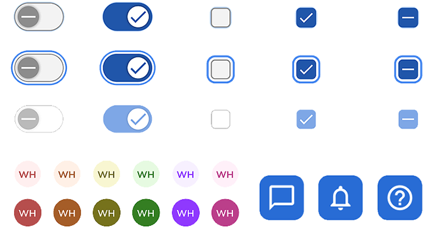
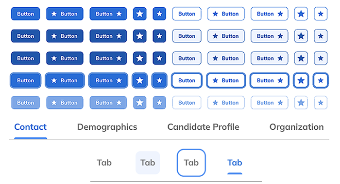
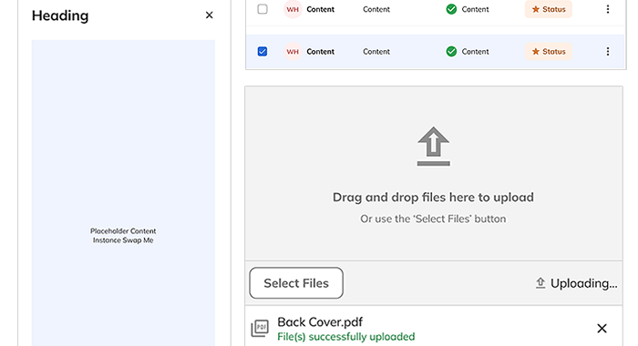
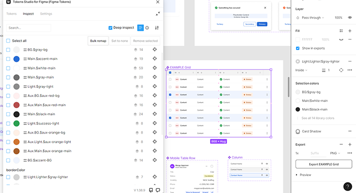
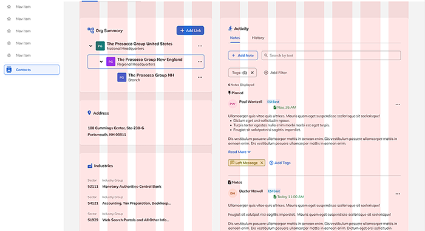

A CRM that had outgrown itself — three frameworks, no shared design logic, and a UI held together by ad-hoc styling.
Madison Resources' in-house CRM, Navigator, had grown across multiple frameworks — React, Angular, and .NET Blazor — with no shared design logic. UI drift, inconsistent components, and ad-hoc styling were slowing delivery and increasing cognitive load for staffing coordinators. Engineering trust was low, and scaling design across Payroll and Onboarding teams felt brittle and reactive.
Three teams, three frameworks, zero shared foundation. Every new feature added more drift — there was no forcing function for consistency.
Without a shared token layer or atomic component architecture, each team solved styling problems independently. The result was a compounding debt: the longer it went unaddressed, the more expensive every new feature became — in design time, engineering rework, and coordinator confusion.
Led the end-to-end creation of Gator — Madison's first unified design system — partnering closely with Product and Engineering.
Seven phases — from audit and benchmarking to governance and adoption across three product teams.
Partnered with product and engineering to audit UI drift, define scalable component patterns, and establish governed delivery across CRM, Payroll, and Onboarding workflows.
One token layer — three frameworks
Rather than creating separate implementations per framework, Gator's token layer was designed to be consumed identically by React, Angular, and .NET Blazor. No per-team overrides, no duplicate maintenance, no drift.
Years of debt mapped and resolved
A full CRM audit identified every inconsistency across Navigator's UI — providing the evidence base for architectural decisions and a clear remediation roadmap for engineering teams.
Designing around Blazor's fragmented component ecosystem
Blazor's major component libraries — MudBlazor, Telerik, Radzen, Syncfusion — each use different naming conventions, SCSS variable strategies, and theming structures. There is no unified token standard across them. Building Gator's token layer on top of any single library's theming system would have meant inheriting those inconsistencies and locking the system to one vendor's architectural decisions. CSS custom properties sit above all of it — consumed identically by Blazor, Angular, and React without any library dependency.
Angular Material, PrimeNG, and Kendo were already built for this
Angular's component libraries share a token-first architecture — semantic tokens, density tokens, typography scales, component-level overrides. That alignment with how design systems are actually built is why Angular consumed Gator's token layer with no friction. Designing the system to match Angular's model first, then ensuring Blazor and React could consume the same tokens, produced an architecture that was future-proof rather than lowest-common-denominator.
"The hardest part wasn't building the system — it was designing it to work inside three frameworks simultaneously without asking teams to stop shipping."
A scalable, governed foundation that replaced years of UI debt — adopted across three product teams.
The work






Start the multi-framework implementation planning earlier — in parallel with architecture definition, not after. The token layer worked cleanly across React, Angular, and Blazor, but some component-level decisions had to be revisited once engineering constraints in each framework became clear. Earlier joint sessions between design and framework-specific engineers would have surfaced those constraints before they became rework.